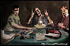

De: La Frikipedia, la enciclopedia extremadamente seria.
De: La Frikipedia, la enciclopedia extremadamente seria. De: La Frikipedia, la enciclopedia extremadamente seria.
| Este usuario sabe jugar un Survival Horror decentemente |  |
Para usar esta plantilla no copies el código, simplemente escribe {{Frikibox/Videojuegos Survival}}.
Autor(es):